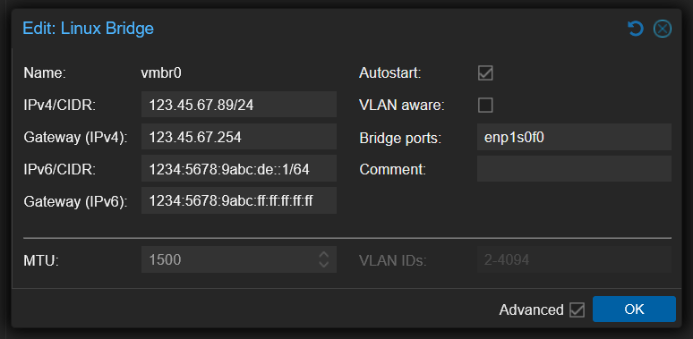

Proxmox on OVH Kimsufi
The objective of this guide is to set up a Proxmox at a hoster who gives you only one public IPv4 IP and (officially) a single /128 IPv6 IP on a dedicated server.
The end result should be that all VMs and LXC containers should have their own IPv6 IPs.
Overview
The external network (VMBR0) has a public IPv4 and a public IPv6 available:
| IPv4 network: 123.45.67.89/24
IPv6 network: 1234:5678:9abc:de::1/128 # (officially /128, really /64)
|
The thing is, the IPv6 assigned is still /64 but the rest of the IPs are not directly accessible by the VMs and containers. A quick way to check this is the following script: Open in github
Click to expand code
1
2
3
4
5
6
7
8
9
10
11
12
13
14
15
16
17
18
19
20
21
22
23
24
25
26
27
28
29
30
31
32
33
34
35
36
37
38
39
40
41
42
43
44
45
46
47
48
49
50
51
52
53
54
55
56
57
58
59
60
61
62
63
64
65
66
67
68
69
70
71
72
73
74
75
76
77
78
79
80
81
82
83
84
85
86
87
88
89
90
91
92
93
94
95
96
97
98
99
100
101
102
103
104
105
106
107
108
109
110
111
112
113
114
115
116
117
118
119
120
121
122
123
124
125
126
127
128
129
130
131
132
133
134
135
136
137
138
139
140
141
142
143
144
145
146
147
148
149
150
151
152
153
154
155
156
157
158
159
160
161
162
163
164
165
166
167
168
169
170
171
172
173
174
175
176
177
178
179
180
181
182
183
184
185
186
187
188
189
190
191
192
193
194
195
196
197
198
199
200
201
202
203
204
205
206
207
208
209
210
211
212
213
214
215
216
217
218
219
220
221
222
223
224
225
226
227
228
229
230
231
232
233
234
235
236
237
238
239
240
241
242
243
244
245
246
247
248
249
250
251
252
253
254
255
256
257
258
259
260
261
262
263
264
265
266
267
268
269
270
271
272
273
274
275
276
277
278
279
280
281
282
283
284
285
286
287
288
289
290
291
292
293
294
295
296
297
298
299
300
301
302
303
304
305
306
307
308
309
310
311
312
313
314
315
316
317
318
319
320
321
322
323
324
325
326
327
328
329
330
331
332
333
334
335
336
337
338
339
340
341
342
343
344
345
346
347
348
349
350
351
352
353
354
355
356
357
358
359
360
361
362
363
364
365
366
367
368
369
370
371
372
373
374
375
376
377
378
379
380
381
382
383
384
385
386
387
388
389
390
391
392
393
394 | #!/bin/bash
#===============================================================================
# IPv6 /64 Access Verification for OVH/Kimsufi
#===============================================================================
# Automatically tests if you have full /64 access (not just /128)
# Tests by adding temporary addresses and verifying they work
# Claude Opus 4.5 generated code
#===============================================================================
set -e
# Colors
RED='\033[0;31m'
GREEN='\033[0;32m'
YELLOW='\033[1;33m'
CYAN='\033[0;36m'
NC='\033[0m'
BOLD='\033[1m'
# Configuration
PING_COUNT=2
PING_TIMEOUT=3
TEST_ADDRESSES=5 # How many test addresses to try
#===============================================================================
# Helper Functions
#===============================================================================
print_pass() { echo -e " ${GREEN}✓${NC} $1"; }
print_fail() { echo -e " ${RED}✗${NC} $1"; }
print_warn() { echo -e " ${YELLOW}⚠${NC} $1"; }
print_info() { echo -e " ${CYAN}ℹ${NC} $1"; }
cleanup() {
# Remove any test addresses we added
if [ -n "$CLEANUP_ADDRS" ]; then
for addr in $CLEANUP_ADDRS; do
ip addr del "$addr" dev "$INTERFACE" 2>/dev/null || true
done
fi
}
trap cleanup EXIT
#===============================================================================
# Detect IPv6 Configuration
#===============================================================================
detect_ipv6_config() {
echo -e "\n${CYAN}${BOLD}▶ Detecting IPv6 Configuration${NC}"
echo "────────────────────────────────────────────────────────────────────────"
# Find interface with global IPv6
INTERFACE=$(ip -6 addr show scope global | awk -F': ' '/^[0-9]+:/ {print $2}' | head -1)
if [ -z "$INTERFACE" ]; then
print_fail "No interface with global IPv6 found"
echo ""
echo -e " ${YELLOW}Your server doesn't have a global IPv6 address configured.${NC}"
echo ""
echo " Possible reasons:"
echo " • IPv6 not assigned by your provider"
echo " • IPv6 available but not configured yet"
echo " • IPv4-only server"
echo ""
echo " Current interfaces:"
ip -6 addr show | grep -E "^[0-9]+:|inet6" | head -20
echo ""
echo " To check if your provider offers IPv6:"
echo " • Check your provider's control panel"
echo " • Look for IPv6 settings or network configuration"
echo " • Contact support to request IPv6"
exit 1
fi
print_info "Interface: ${BOLD}$INTERFACE${NC}"
# Get primary IPv6 address and prefix using awk (more reliable than grep -P)
local addr_line=$(ip -6 addr show dev "$INTERFACE" scope global | grep 'inet6' | head -1)
PRIMARY_IPV6=$(echo "$addr_line" | awk '{print $2}' | cut -d'/' -f1)
PRIMARY_PREFIX=$(echo "$addr_line" | awk '{print $2}' | cut -d'/' -f2)
if [ -z "$PRIMARY_IPV6" ]; then
print_fail "Could not detect IPv6 address"
exit 1
fi
print_info "Primary IPv6: ${BOLD}$PRIMARY_IPV6/$PRIMARY_PREFIX${NC}"
# Extract /64 prefix using Python (handles all IPv6 formats correctly)
PREFIX_64=$(python3 -c "
import ipaddress
addr = ipaddress.IPv6Address('$PRIMARY_IPV6')
# Get the /64 network and extract just the network address
network = ipaddress.IPv6Network((addr, 64), strict=False)
# Print without the prefix length
print(str(network.network_address))
" 2>/dev/null)
if [ -z "$PREFIX_64" ]; then
print_fail "Could not calculate /64 prefix"
exit 1
fi
print_info "Your /64 block: ${BOLD}${PREFIX_64}/64${NC}"
# Get gateway
GATEWAY=$(ip -6 route show default | awk '/via/ {print $3}' | head -1)
if [ -n "$GATEWAY" ]; then
print_info "Gateway: $GATEWAY"
fi
# Check current connectivity
if ping6 -c 1 -W 2 2001:4860:4860::8888 &>/dev/null; then
print_pass "IPv6 connectivity confirmed"
else
print_warn "IPv6 connectivity issues detected"
fi
}
#===============================================================================
# Generate Test Addresses
#===============================================================================
generate_test_addresses() {
# Generate test addresses in the /64 using Python for correct formatting
TEST_ADDRS=()
for i in $(seq 1 $TEST_ADDRESSES); do
# Generate address like prefix::7e57:N
local test_addr=$(python3 -c "
import ipaddress
prefix = ipaddress.IPv6Address('$PREFIX_64')
# Add offset to create test address (0x7e570001, 0x7e570002, etc.)
# This creates addresses like ::7e57:1, ::7e57:2
offset = 0x7e570000 + $i
test = ipaddress.IPv6Address(int(prefix) + offset)
print(str(test))
" 2>/dev/null)
if [ -n "$test_addr" ] && [ "$test_addr" != "$PRIMARY_IPV6" ]; then
TEST_ADDRS+=("$test_addr")
fi
done
if [ ${#TEST_ADDRS[@]} -eq 0 ]; then
print_fail "Could not generate test addresses"
exit 1
fi
print_info "Generated ${#TEST_ADDRS[@]} test addresses"
}
#===============================================================================
# Test Adding Addresses
#===============================================================================
test_add_addresses() {
echo -e "\n${CYAN}${BOLD}▶ Testing /64 Address Space${NC}"
echo "────────────────────────────────────────────────────────────────────────"
CLEANUP_ADDRS=""
local success_count=0
local fail_count=0
local i=0
local total=${#TEST_ADDRS[@]}
while [ $i -lt $total ]; do
local addr="${TEST_ADDRS[$i]}"
echo -e "\n Testing ($((i+1))/$total): ${BOLD}$addr${NC}"
# Check if already exists
if ip -6 addr show dev "$INTERFACE" | grep -q "$addr"; then
print_warn "Address already exists, skipping"
i=$((i+1))
continue
fi
# Try to add the address
if ip addr add "${addr}/128" dev "$INTERFACE" 2>/dev/null; then
CLEANUP_ADDRS="$CLEANUP_ADDRS ${addr}/128"
print_pass "Added to interface"
# Wait for address to be ready
sleep 1
# Verify it's actually there
if ip -6 addr show dev "$INTERFACE" | grep -q "$addr"; then
print_pass "Address is active"
success_count=$((success_count+1))
else
print_fail "Address not showing on interface"
fail_count=$((fail_count+1))
fi
else
print_fail "Could not add address (permission denied?)"
fail_count=$((fail_count+1))
fi
i=$((i+1))
done
echo ""
ADDRS_ADDED=$success_count
ADDRS_FAILED=$fail_count
}
#===============================================================================
# Test External Reachability
#===============================================================================
test_external_reachability() {
echo -e "\n${CYAN}${BOLD}▶ Testing Outbound Connectivity from New Addresses${NC}"
echo "────────────────────────────────────────────────────────────────────────"
if [ "$ADDRS_ADDED" -eq 0 ]; then
print_warn "No addresses were added, skipping connectivity test"
return
fi
local reachable_count=0
local i=0
local total=${#TEST_ADDRS[@]}
while [ $i -lt $total ]; do
local addr="${TEST_ADDRS[$i]}"
# Check if this address is on the interface
if ! ip -6 addr show dev "$INTERFACE" | grep -q "$addr"; then
i=$((i+1))
continue
fi
echo -e "\n From: ${BOLD}$addr${NC}"
# Test outbound ping using this source address
if ping6 -c $PING_COUNT -W $PING_TIMEOUT -I "$addr" 2001:4860:4860::8888 &>/dev/null; then
print_pass "Outbound connectivity works"
reachable_count=$((reachable_count+1))
else
print_warn "Outbound ping failed (may still work - OVH NDP quirk)"
fi
i=$((i+1))
done
ADDRS_REACHABLE=$reachable_count
}
#===============================================================================
# Test NDP Behavior
#===============================================================================
test_ndp_behavior() {
echo -e "\n${CYAN}${BOLD}▶ NDP Proxy Requirement Check${NC}"
echo "────────────────────────────────────────────────────────────────────────"
# Check if proxy_ndp is enabled
local proxy_ndp=$(cat /proc/sys/net/ipv6/conf/all/proxy_ndp 2>/dev/null || echo "0")
local forwarding=$(cat /proc/sys/net/ipv6/conf/all/forwarding 2>/dev/null || echo "0")
if [ "$proxy_ndp" = "1" ]; then
print_pass "NDP proxy is enabled (proxy_ndp=1)"
else
print_info "NDP proxy is disabled (will need for VMs)"
fi
if [ "$forwarding" = "1" ]; then
print_pass "IPv6 forwarding is enabled"
else
print_info "IPv6 forwarding is disabled (will need for VMs)"
fi
# Check for ndppd
if command -v ndppd &>/dev/null; then
print_pass "ndppd is installed"
if systemctl is-active --quiet ndppd 2>/dev/null; then
print_pass "ndppd service is running"
fi
else
print_info "ndppd not installed (required for VM IPv6)"
fi
echo ""
echo -e " ${YELLOW}${BOLD}Note on Inbound Traffic:${NC}"
echo " OVH uses NDP instead of routing your /64. This means:"
echo " • Inbound traffic to VM addresses requires NDP proxy"
echo " • Without ndppd, VMs won't receive incoming IPv6 traffic"
echo " • Outbound from VMs may work but replies won't return"
}
#===============================================================================
# Summary
#===============================================================================
print_summary() {
echo -e "\n${CYAN}${BOLD}━━━━━━━━━━━━━━━━━━━━━━━━━━━━━━━━━━━━━━━━━━━━━━━━━━━━━━━━━━━━━━━━━━━━━━━━${NC}"
echo -e "${CYAN}${BOLD} SUMMARY${NC}"
echo -e "${CYAN}${BOLD}━━━━━━━━━━━━━━━━━━━━━━━━━━━━━━━━━━━━━━━━━━━━━━━━━━━━━━━━━━━━━━━━━━━━━━━━${NC}"
echo ""
echo -e " ${BOLD}Your IPv6 Block:${NC} ${PREFIX_64}/64"
echo -e " ${BOLD}Addresses Tested:${NC} ${#TEST_ADDRS[@]}"
echo -e " ${BOLD}Successfully Added:${NC} $ADDRS_ADDED"
if [ $ADDRS_ADDED -gt 0 ]; then
echo ""
echo -e " ${GREEN}${BOLD}✓ /64 ACCESS CONFIRMED${NC}"
echo -e " ${GREEN}You can use the full /64 block for your VMs!${NC}"
echo ""
echo -e " ${BOLD}Available range:${NC}"
echo -e " ${PREFIX_64} through ${PREFIX_64%::*}:ffff:ffff:ffff:ffff"
echo ""
echo -e "${CYAN}${BOLD}━━━━━━━━━━━━━━━━━━━━━━━━━━━━━━━━━━━━━━━━━━━━━━━━━━━━━━━━━━━━━━━━━━━━━━━━${NC}"
echo -e "${CYAN}${BOLD} NEXT STEPS FOR PROXMOX${NC}"
echo -e "${CYAN}${BOLD}━━━━━━━━━━━━━━━━━━━━━━━━━━━━━━━━━━━━━━━━━━━━━━━━━━━━━━━━━━━━━━━━━━━━━━━━${NC}"
echo ""
echo -e " ${BOLD}1. Install NDP Proxy daemon:${NC}"
echo " apt install ndppd"
echo ""
echo -e " ${BOLD}2. Configure /etc/ndppd.conf:${NC}"
echo " ┌────────────────────────────────────────────────────┐"
echo " │ route-ttl 30000 │"
echo " │ proxy vmbr0 { │"
echo " │ router yes │"
echo " │ timeout 500 │"
echo " │ ttl 30000 │"
echo " │ rule ${PREFIX_64}/64 {"
echo " │ static │"
echo " │ } │"
echo " │ } │"
echo " └────────────────────────────────────────────────────┘"
echo ""
echo -e " ${BOLD}3. Enable IPv6 forwarding:${NC}"
echo " echo 1 > /proc/sys/net/ipv6/conf/all/forwarding"
echo ""
echo " For persistence, add to /etc/sysctl.conf:"
echo " net.ipv6.conf.all.forwarding = 1"
echo ""
echo -e " ${BOLD}4. Start ndppd:${NC}"
echo " systemctl enable --now ndppd"
echo ""
echo -e " ${BOLD}5. VM Configuration:${NC}"
echo " • Bridge: vmbr0"
echo " • IPv6: Any address from ${PREFIX_64}/64"
echo " • Gateway: ${PRIMARY_IPV6} (Proxmox host)"
echo ""
echo -e " ${BOLD}Example VM config:${NC}"
echo " IPv6 Address: ${PREFIX_64%::*}::100/64"
echo " IPv6 Gateway: ${PRIMARY_IPV6}"
echo ""
else
echo ""
echo -e " ${RED}${BOLD}✗ Could not verify /64 access${NC}"
echo ""
echo -e " ${YELLOW}${BOLD}IMPORTANT: Not all Kimsufi servers have /64 routed!${NC}"
echo ""
echo " Manual verification steps:"
echo " 1. Ensure your host has IPv6 working first (ping6 google.com)"
echo " 2. Try changing your address from ::1/128 to ::2/64"
echo " 3. If you can still reach IPv6 addresses, you have /64 access"
echo " 4. If not - bad server. Request refund and get a new one."
echo ""
echo " Make sure you're running as root: sudo $0"
fi
echo ""
}
#===============================================================================
# Main
#===============================================================================
main() {
echo -e "${CYAN}${BOLD}"
echo "━━━━━━━━━━━━━━━━━━━━━━━━━━━━━━━━━━━━━━━━━━━━━━━━━━━━━━━━━━━━━━━━━━━━━━━━"
echo " IPv6 /64 Access Verification"
echo "━━━━━━━━━━━━━━━━━━━━━━━━━━━━━━━━━━━━━━━━━━━━━━━━━━━━━━━━━━━━━━━━━━━━━━━━"
echo -e "${NC}"
# Check root
if [ "$EUID" -ne 0 ]; then
print_fail "This script must be run as root"
echo " Run: sudo $0"
exit 1
fi
# Check for Python3 (required for reliable IPv6 parsing)
if ! command -v python3 &>/dev/null; then
print_fail "python3 is required for IPv6 address parsing"
echo " Install with: apt install python3"
exit 1
fi
detect_ipv6_config
generate_test_addresses
test_add_addresses
test_external_reachability
test_ndp_behavior
print_summary
}
main "$@"
|
So if the script works, it'll give you the steps needed to setup additional IPs. Lets go through them one by one.
Change Proxmox node IPv6 subnet
First, change your server's IPv6 IP subnet from /128 to /64 in proxmox UI, usually for vmbr0
Add the following content, replace 1234:5678:9abc:de:: with your server's IPv6 IP:

Setup ndppd proxy
This is used as we cant use the provided OVH gateway as a proxy. So we setup ndppd to use our dedicated server as a proxy.
| apt update
apt install ndppd nano
|
Configure it by creating/editing: /etc/ndppd.conf
Add:
| route-ttl 30000
proxy vmbr0 {
router yes
timeout 500
ttl 30000
rule 1234:5678:9abc:de::/64 {
static
}
}
|
Then allow IPv6 forwarding:
| nano /etc/sysctl.d/99-ipv6-routing.conf
|
Add:
| net.ipv6.conf.all.forwarding = 1
|
Apply these sysctl changes:
Finally enable ndppd to start on boot and start it now as well:
| systemctl enable --now ndppd
|
That's all changes needed from proxmox.
Add IPv6 only VM or LXC container:
Create a VM or LXC container as normal, using vmbr0 as network bridge. Then when setting up IPv6 for the VM/LXC, use the following settings:
| IP: 1234:5678:9abc:de::xxx/64
Gateway: 1234:5678:9abc:de::1
|
Note:
We are using our proxmox node's IPv6 address as gateway on vmbr0 which is the default network bridge.
We can use any IPv6 IP starting with the first 4 parts of the host's IPv6 IP. For example, this is a valid IP for our VM/LXC container:
1234:5678:9abc:de:1234:5678:90ab:cde0